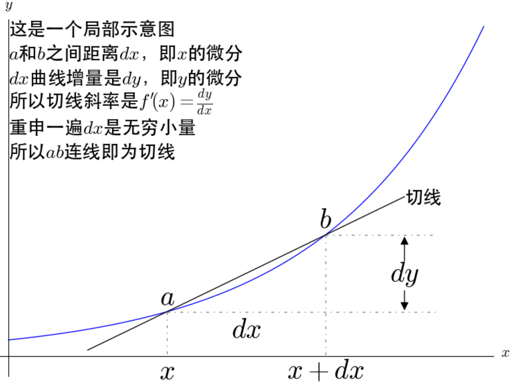

积分和微分
修改于: 2023-03-17以下主要针对这样的一元函数:
y = f(x)
- 想起以前大学的一个概念
- 可导一定连续, 连续不一定可导
古典微积分, 导数
古典微积分求解曲线围成的面积的主要思想，就是把曲线下的面积划分成了无数个矩形面积之和
（显然）直觉告诉我们，如果 越大，则这个近似越准确

此时，无穷小量就出现了。 在 古典微积分 学中，无穷小量是建立微积分的基础。 莱布尼兹介绍微积分的论文就叫做《论深度隐藏的几何学及无穷小与无穷大的分析》。 在当时的观点下，无穷小量到底是什么，也是颇有争论的。 当时有数学家打比喻：“无穷小量就好比山上的灰尘，去掉和增加都没有什么影响”，很显然有人认为这是真实存在的。 在具体计算曲线下面的面积，即我们现在所说的定积分的时候，必然会遇到导数的问题，所以很自然的开始了对导数的定义和讨论。
- 导数的古典定义
在曲线上取两点，连接起来所形成的直线，就称为曲线的割线：
连续的割线可以反应曲线的平均变化率。
也就是说，这一段曲线大概总的趋势是上升还是下降，上升了多少，用割线描述是并不是精确的。
有了切线之后我们进一步去定义导数
从这张图得出 导数 的定义
f'(x) = dy / dx
而 dx 和 dy 被称为 x 和 y 的 微分 ，都为无穷小量，
所以导数也被莱布尼兹称为 微商 (微分之商)
- 无穷小量导致的麻烦
上图实际上是有矛盾的
所以就古典微积分中切线的定义而言，微积分的基础就是不牢固的。
无穷小量的麻烦还远远不止这一些，x^2 的导数是这样计算的:
dx 先在除法中当作不为 0 的变量被约掉, 再在最后的加法中当作 0 被忽略.
一会是0一会又不是0。 无穷小量和无穷小量相除为什么可以得到不一样的值？难道不应该都是1？ 无穷小量还违反了 阿基米德公理 ，这个才是更严重的缺陷， 康托尔证明过，如果阿基米德公理被违背的话会出大问题。
一边是看起来没有错的微积分，一边是有严重缺陷的无穷小量，这就是第二次数学危机。 数学的严格性受到了挑战， “对于数学，严格性不是一切，但是没有了严格性就没有了一切”。
- 相关概念
- 无穷小量
- 在用古典微积分求解曲线围成的面积事， 把曲线对的定义域[a,b]均分成间隔长度 delta x (这应该是三角形符号, 我没找到, 暂时直接用英文) 为n份， 当 n->∞ 时， delta x 变成无穷小量，记作 dx ，即 x 的 微分
- 微分
- 微分是微小的增量，即无穷小量。在古典微积分学中，无穷小量是建立微积分的基础。
- 切线
- 通过无穷小量定义了切线。
- 导数
- 导数就是切线的斜率。
基于极限重建的微积分
莱布尼兹、欧拉等都认识到了无穷小量导致的麻烦， 一直拼命想要修补，但这个问题等了200年后，即19世纪极限概念的清晰之后才得到解决。
解决办法是，完全摈弃无穷小量，基于极限的概念，重新建立了微积分。

可以看到，极限的描述并没有用到什么无穷小量。
导数 的极限定义

用极限重新严格定义了导数，此时已经脱离了微商的概念。也就是此时，导数应该被看成一个整体。 不过我们仍然可以去定义什么是微分，说到这里，真是有点剧情反转:
- 古典微积分是先定义微分再定义导数，
- 现在极限微积分是先定义了导数再有微分。


- 相关概念
- 导数
- 导数被定义为一个极限，其意义就是变化率
- 微分
- 微分是一个线性函数，其意义就是变化的具体数值
- 切线
- 有了导数之后就可以被确定下来了
古今微积分
微积分实际上被发明了两次。 古典微积分和极限微积分可以说是两个东西。我们再来比较一下古典微积分和极限微积分。
- 古典微积分是先定义微分再定义导数； 极限微积分是先定义导数再定义微分。
- 古典微积分的导数是基于无穷小量定义的； 极限微积分的导数是基于极限定义的
- 古典微积分的微分是无穷小量； 极限微积分的微分是一个线性函数。
- 古典微积分的定积分是求无穷小矩形面积的和；极限微积分的定积分是求黎曼和。
- 古典微积分的切线是画出来的； 极限微积分的切线是算出来的。
- 古典微积分的建立过程很直观； 极限微积分的建立过程更抽象。
- 古典微积分最大的好处就是很直观，不过也是因为太直观了， 所以我们一直都无法忘记它带来的印象，也对我们理解极限微积分造成了障碍。 也让我们在实际应用中造成了错误的理解。
加权积分
比如摸球, 蓝球 10 分, 红球 5 分, 最后的得分就是:
10 * nBlue + 5 * nRed
这里 10, 5 就是权